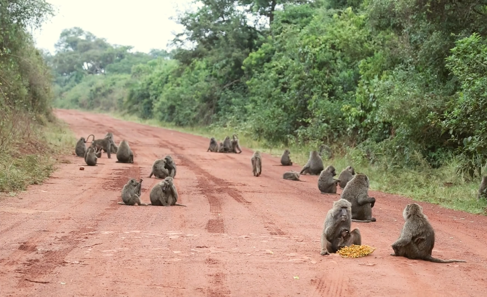

Immerse yourself in the grand diversity of the Pearl of Africa on this definitive 16-day Uganda wildlife and cultural expedition. Meticulously designed for travelers seeking profound wildlife encounters interwoven with authentic cultural heritage, this grand tour spans Uganda's finest wilderness sanctuaries and tribal heartlands. Journey east to discover the historical Source of the River Nile in Jinja and hike the three dramatic cascades of Sipi Falls beneath Mount Elgon. Delve into the remote northeast to explore ancient prehistoric rock paintings at Nyero and engage in authentic cultural interactions with the pastoralist Karamojong in their traditional Manyattas. Traverse the rugged wilderness of Kidepo Valley National Park on extensive savannah game drives, marvel at the earth-trembling force of Murchison Falls, track habituated chimpanzees in Kibale Forest, witness the bubbling Sempaya hot springs of Semuliki, and cruise the wildlife-packed Kazinga Channel in Queen Elizabeth National Park. Seek rare tree-climbing lions in Ishasha, experience a life-changing encounter with endangered mountain gorillas in Bwindi Impenetrable National Park, connect with the indigenous Batwa pygmies, and conclude with an on-foot bush walking safari in Lake Mburo National Park. This itinerary delivers the ultimate comprehensive Ugandan safari adventure.

Arrival at Entebbe International Airport & Transfer to Kampala
Transfer to Jinja, Sezibwa Falls Cultural Walk & Source of the Nile Boat Cruise
Scenic Drive to Sipi Falls on Mount Elgon & Three-Tier Waterfall Guided Hike
Bugisu Arabica Coffee Experience, Prehistoric Nyero Rock Art & Transfer to Moroto
Authentic Karamojong Cultural Manyatta Experience & Transfer to Kidepo Valley
Full-Day Big Game Savannah Safari in Kidepo Valley & Kanangorok Hot Springs
Scenic Transfer to Murchison Falls National Park via Gulu & Karuma
Northern Delta Morning Game Safari & Afternoon Victoria Nile Boat Cruise to the Falls
Top of Murchison Falls & Scenic Transfer to Kibale Forest National Park
Chimpanzee Tracking in Kibale Rainforest & Bigodi Wetland Sanctuary Guided Walk
Day Excursion to Semuliki National Park (Sempaya Hot Springs) & Transfer to Queen Elizabeth
Kasenyi Plains Morning Game Drive & Kazinga Channel Afternoon Boat Safari
Southern Ishasha Tree-Climbing Lions Safari & Transfer to Bwindi Impenetrable Forest
Mountain Gorilla Trekking in Bwindi Rainforest & Indigenous Batwa Cultural Visit
Transfer to Lake Mburo National Park & Afternoon Savannah Lake Boat Cruise
Guided Morning Bush Walking Safari, Equator Monument Stopover & Entebbe Departure
Welcome to Uganda, the Pearl of Africa! Upon touchdown at Entebbe International Airport, you will be warmly met by your dedicated Roots East Africa Adventure safari driver-guide. Following assistance with your luggage, embark on a scenic transfer to your hotel in Kampala or Entebbe. If your flight arrives early, enjoy an introductory driving tour of Kampala's vibrant city center or unwind amid the lush tropical gardens of your accommodation. In the evening, your guide will conduct a detailed safari briefing outlining the remarkable 16-day wildlife and cultural odyssey ahead, followed by dinner and a relaxing night's rest.
After breakfast, check out and journey eastward along the northern shores of Lake Victoria toward Jinja, the historical adventure hub of East Africa. En route, stop at the sacred Sezibwa Falls in Mukono, an ancient cultural heritage site deeply revered in Buganda kingdom folklore. Take a guided walking tour admiring the roaring waterfalls and medicinal indigenous trees, and learning about ancient traditional spiritual ceremonies. Continue past sprawling sugar and tea plantations into Jinja town. In the afternoon, board a motorized boat cruise on the mighty Victoria Nile to Speke's Monument, marking the exact geographic point where British explorer John Hanning Speke discovered the Nile's departure from Lake Victoria in 1862. Savor dinner and overnight overlooking the tranquil riverbanks.
Following breakfast, set off towards eastern Uganda through Iganga and Mbale, ascending the scenic volcanic foothills of Mount Elgon to the tranquil highlands of Sipi in Kapchorwa district. Upon arrival, check in to your hillside lodge offering breathtaking vistas of the cascading falls and the sweeping Karamoja plains below. After lunch, meet a local community guide to embark on a guided trek visiting all three distinct waterfalls that comprise Sipi Falls. Walk through lush village pathways, explore natural rock caves tucked behind roaring sheets of falling water, and take in spectacular panoramas of Mount Elgon's ancient caldera ridges before returning to your lodge for dinner.
Begin your morning with an authentic farm-to-cup Bugisu Arabica coffee tour. Guided by local farmers, stroll through terraced volcanic coffee plantations, harvest ripe cherries, and manually de-pulp, roast, and grind your own beans over a charcoal fire to brew a steaming cup of fresh organic coffee. Afterward, depart Sipi heading north into Kumi district to visit the prehistoric Nyero Rock Paintings, a UNESCO tentative World Heritage Site. Marvel at the ancient red ochre geometric and concentric designs dating back over a millennium, created by early hunter-gatherers. Continue through Soroti into the semi-arid rugged landscapes of southern Karamoja, arriving in Moroto town nestled at the base of Mount Moroto for dinner and overnight.
Dedicate your morning to an immersive cultural visit within a traditional Karamojong Manyatta (homestead). Meet elders and community members to discover the centuries-old pastoralist way of life, livestock traditions, unique mud-and-thatch architecture, beadwork artistry, and vibrant jumping dances reminiscent of the Maasai. Following this meaningful cultural exchange, begin the scenic northward journey across the wild, untamed landscapes of Karamoja past Kotido and Kaabong. In the late afternoon, enter Kidepo Valley National Park, consistently celebrated as one of Africa's most rugged and breathtaking wilderness expanses. Check in to your lodge for dinner accompanied by the sounds of the African night.
Spend an entire day exploring the untamed beauty of Kidepo Valley. Set out at dawn on an extensive morning game drive through the Narus Valley, where the permanent water sources attract teeming wildlife. Watch for prides of lions basking on granite kopjes, elusive leopards, cheetahs, striped hyenas, massive herds of Cape buffaloes, African elephants, Rothschild's giraffes, and Burchell's zebras. After a relaxed midday lunch at your lodge, venture northward across the dry sand bed of the Kidepo River toward the Kanangorok Hot Springs near the South Sudan border, soaking in panoramic vistas across the dramatic jagged peaks of Mount Morungole. Conclude with a sunset game drive en route to dinner.
After breakfast, say farewell to Kidepo Valley and begin a cross-country journey southwestward across northern Uganda. Travel through the historic trading towns of Kitgum and Gulu, passing traditional Acholi homesteads and fertile savannah grasslands. Pause in Gulu for lunch and local crafts browsing, then cross the Karuma Bridge over the roaring Victoria Nile. Enter the northern gates of Murchison Falls National Park, Uganda's largest conservation area, enjoying an afternoon game drive as you cross toward your safari lodge. Settle in for dinner and relaxation overlooking the wilderness.
Embark at sunrise on an exhilarating game drive across the sweeping savannahs of the northern delta sector. Keep your camera ready for lions on the prowl, spotted hyenas, leopards, large herds of elephants, towering giraffes, Jackson's hartebeests, oribi, and abundant birdlife. Return to your lodge for lunch and relaxation. At 2:00 PM, depart on a legendary three-hour boat safari up the Victoria Nile to the bottom of Murchison Falls. Glide past hundreds of hippos, colossal basking Nile crocodiles, and thirsty herds of buffalo and elephants on the riverbanks. The cruise culminates at the turbulent base of the falls, where the entire Nile funnels through a narrow 7-meter gorge with thunderous power.
Following breakfast, drive to the dramatic Top of Murchison Falls to feel the ground shake and witness millions of gallons of water hurtling through the rock chasm, creating permanent rainbows in the mist. Exit the park and commence a scenic drive south through rural Bunyoro kingdom country, following the Albertine Rift Valley escarpment with glimpses of Lake Albert. Pause for lunch in the bustling regional capital of Hoima before continuing past lush tea plantations to Fort Portal, nestled under the iconic Rwenzori Mountains ("Mountains of the Moon"). Proceed to your lodge near Kibale Forest National Park for dinner and overnight.
After breakfast, report to Kanyanchu Visitor Center for a pre-trek briefing before heading deep into Kibale Forest, home to Africa's highest density of primates. Led by experienced UWA rangers, track habituated chimpanzees through the dense canopy. Spend an extraordinary hour observing them feeding, socializing, and swinging through ancient fig trees. After lunch back at the lodge, take a guided eco-walk along the wooden boardwalks of the Bigodi Wetland Sanctuary. Managed by local community conservationists, this biodiverse swamp offers sightings of 8 monkey species—including red colobus and grey-cheeked mangabeys—and over 200 bird species, including the iconic Great Blue Turaco.
Today, take a scenic drive around the northern tip of the Rwenzori range into the Albertine Rift floor to explore Semuliki National Park, an eastern extension of the vast Congo Basin rainforest. Visit the famous Sempaya Hot Springs—both the bubbling "Female" spring (Nyasimbi) boiling at over 100°C and the dramatic geyser-like "Male" spring (Bintente). Observe indigenous communities boiling eggs and plantains in the steaming mineral waters. After lunch in Fort Portal, continue south toward Queen Elizabeth National Park, crossing the Equator line and arriving at your safari lodge in the evening for dinner overlooking the savanna.
Begin your day with an early morning game drive in the Kasenyi plains, a sprawling breeding ground for Uganda kobs that regularly attracts predators including lions, leopards, and hyenas. Capture striking photos of elephants, giant forest hogs, buffaloes, and warthogs grazing in the golden morning light. Return to the lodge for lunch. In the afternoon, enjoy a celebrated two-hour boat safari along the Kazinga Channel, a 32-km natural waterway linking Lake George and Lake Edward. Encounter massive pods of wallowing hippos, Nile crocodiles, and hundreds of vibrant waterbirds such as African skimmers, pelicans, and kingfishers before returning to your lodge for dinner.
Following breakfast, check out and travel south through Queen Elizabeth National Park into the secluded Ishasha sector. Embark on a specialized game drive scanning the low-hanging branches of sprawling fig trees, searching for the famous tree-climbing lions resting high above the ground. Along with lions, spot herds of topi, kobs, and buffaloes. After enjoying a packed lunch in Ishasha, continue south into the dramatic Kigezi highlands, winding through steep terraced ridges toward Bwindi Impenetrable National Park. Arrive at your rainforest lodge in the late afternoon, soak in the misty jungle ambiance, and rest ahead of tomorrow's gorilla trekking.
After an early breakfast, gather at UWA park headquarters for an essential safety and etiquette briefing. Assigned to a habituated gorilla family, enter the primeval rainforest accompanied by expert rangers and armed trackers. The trek through dense undergrowth and steep slopes takes between 2 to 6 hours, but finding the gorillas is an emotional, unforgettable milestone. Spend a magical, closely regulated hour watching the gentle giants feed, play, and groom in their untouched natural home. Upon return, receive your commemorative trekking certificate. In the late afternoon, participate in an authentic cultural visit with the indigenous Batwa community, discovering ancient hunting techniques, bushcraft, and traditional forest songs.
Following breakfast, depart Bwindi and drive eastward through Kabale and the rolling Ankole hills, famous for long-horned Ankole cattle. Stop in Mbarara for lunch before continuing to Lake Mburo National Park, a charming gem of acacia woodland and open savannah. Arrive in the afternoon and embark on a relaxing boat cruise on Lake Mburo, observing hippos, crocodiles, and specialized birdlife like the African finfoot and malachite kingfisher. In the late afternoon, enjoy an evening game drive spotting zebras, impalas, elands, topis, waterbucks, and warthogs, before dining at your lodge under the starlit sky.
Awake to the wilderness and embark on an invigorating early morning guided bush walking safari accompanied by an armed UWA ranger. Walking on foot allows you to experience nature intimately, tracking animal footprints and encountering zebras, impalas, and giraffes from ground level. Return to the lodge for breakfast, check out, and begin the return journey to Kampala or Entebbe. Stop at the Uganda Equator monument in Kayabwe for photographs, water flow Coriolis demonstrations, and souvenir shopping. Arrive in Entebbe in the late afternoon, where your driver-guide transfers you to Entebbe International Airport for your flight home, concluding this extraordinary 16-day Uganda wildlife and cultural journey.